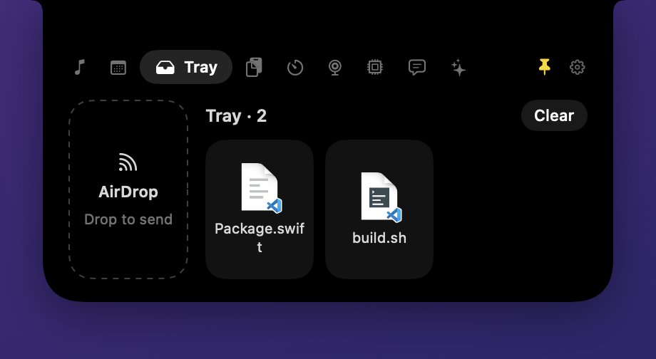
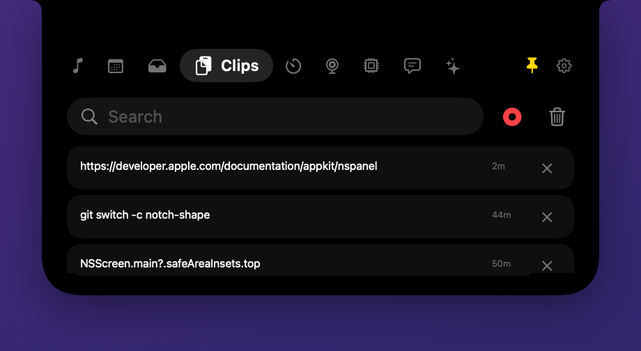
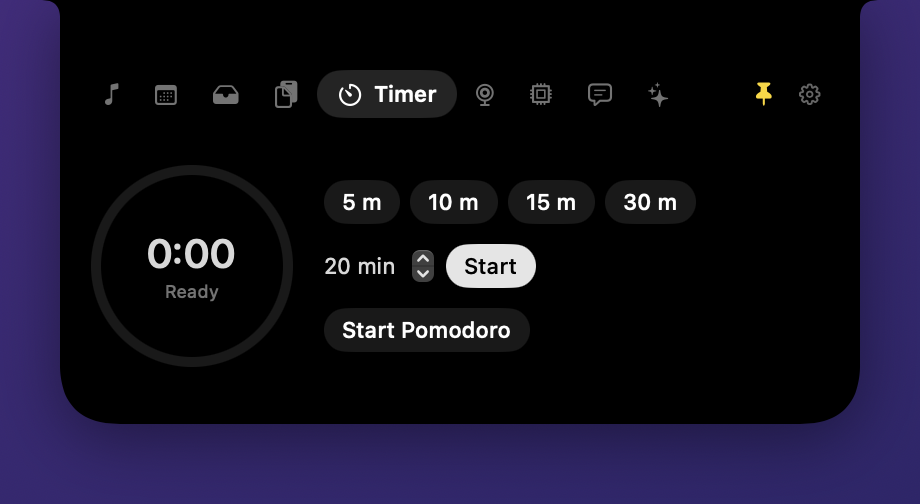
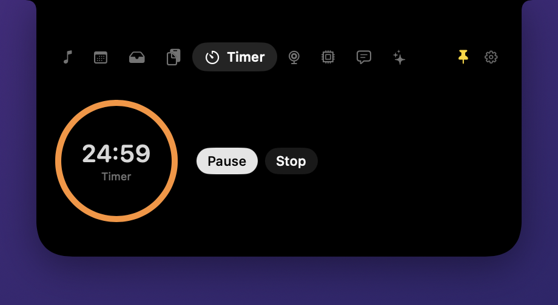
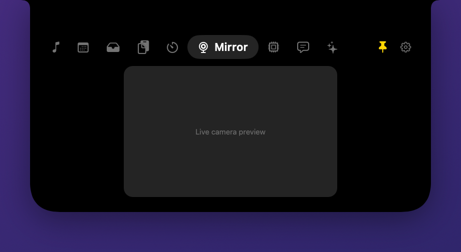
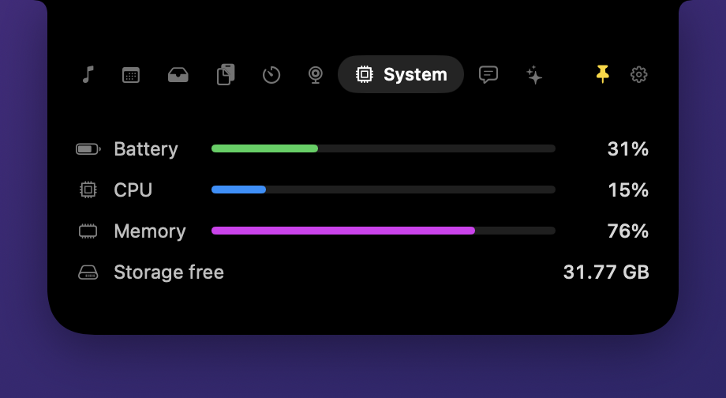
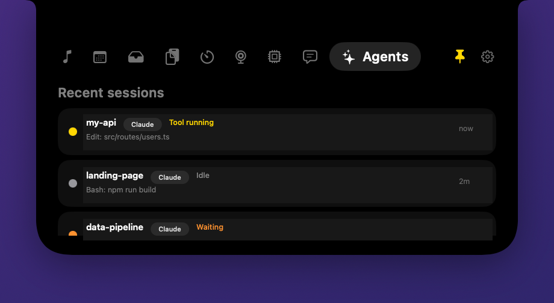
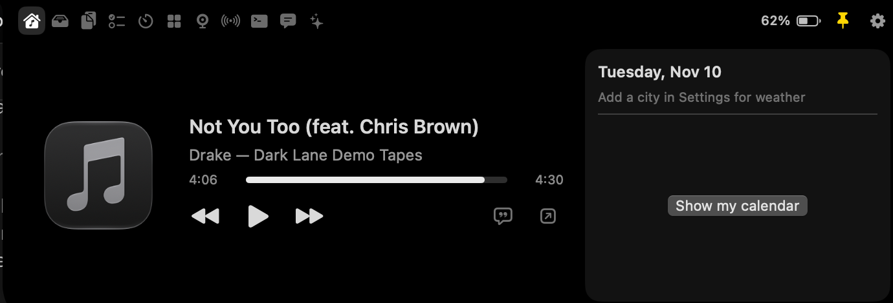
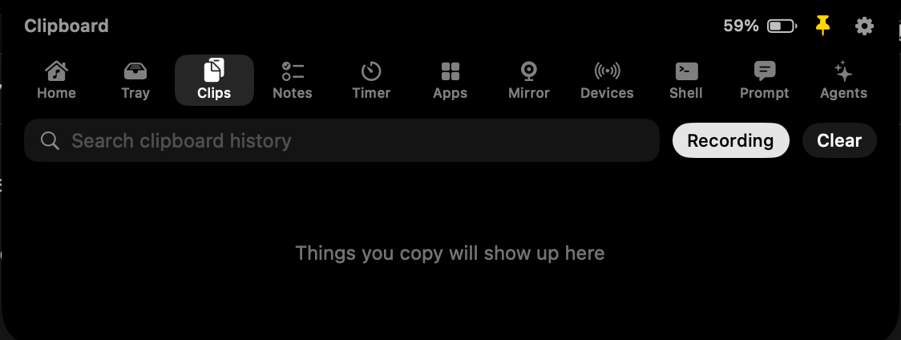

Complete Reproduction Guide
Topside
A macOS notch app, specified end to end — architecture, platform
techniques, design system, build steps, and every trap worth knowing before you start.

This is written to be handed to a capable coding AI, together with the single prompt in §14, to reproduce an app of the same shape. It is deliberately specific about the parts that are hard to guess: how a window sits over the notch, how the system's Now Playing feed is reached, why the obvious way of resizing the window silently breaks hovering, and which Swift expression will hang the type-checker.
Three ways to use it:
MediaRemote.framework, which is private and undocumented. It works on
macOS 27 as described here, and it may stop working on any future release. Everything
else in the app uses public frameworks.
A panel that lives in the MacBook's camera housing. Rest the pointer on the notch and it drops down; move away and it collapses back into the hardware.
| The notch is the window | Collapsed, the app occupies the housing and nothing more. Every state change grows downward from it. |
| Hover, don't click | Opening is a 0.15 s dwell on the notch. Clicking also works. Closing happens 0.35 s after the pointer leaves, unless pinned. |
| Never duplicate the system | No volume or brightness overlays — macOS already draws those. The app only shows what the system does not. |
| One row of options | All nine sections sit in a single row under the notch. The selected one expands into a labelled pill; the rest stay as icons. |
| Quiet by default | Anything that reaches the network (weather, lyrics) or reads private data (calendar, camera) is off until switched on. |
| Playing | Now playing from any app — artwork, scrubber, transport, optional lyrics |
| Today | Upcoming calendar events and current weather |
| Tray | A file shelf fed by dragging onto the notch; AirDrop, zip, Quick Look, share |
| Clips | Searchable clipboard history, held in memory only |
| Timer | Countdown timers and a Pomodoro cycle |
| Mirror | Camera preview for checking yourself before a call |
| System | Battery, CPU, memory and free storage |
| Prompt | Teleprompter that scrolls on a clock or follows your voice |
| Agents | Read-only status of local Claude Code and Codex sessions |
All captured from the running app at its real size, against a plain backdrop. The panel is 400 pt wide and 212 pt tall in every one of them.









A plain SwiftPM executable — no Xcode project, no dependencies. AppKit owns the window; SwiftUI draws everything inside it.
| AppDelegate | Owns one NotchController per eligible screen, the 15 Hz pointer
poll, the status item, and the settings window. Rebuilds controllers when displays
change. |
| NotchController | One screen's panel. Computes notch geometry, resizes the window on open and close, decides from the pointer position whether to open or close, interprets scroll-wheel swipes. |
| NotchModel | ObservableObject holding isOpen, the selected tab,
pinned state and drop-target state. The single source of truth the SwiftUI tree
reads. |
| Services | Singletons, each an ObservableObject, each polling or observing one
system facility. Views observe them directly; there is no coordinator between
them. |
| Views | NotchRootView switches between collapsed and open; the open view
renders a tab row and one tab body. |
| File | Lines | Holds |
|---|---|---|
| App.swift | 376 | Entry point, NSPanel, NotchController, AppDelegate, menu bar hider |
| Core.swift | 279 | Prefs, Tab enum, NotchModel, shared UI pieces, the notch outline shape |
| MediaService.swift | 399 | Now Playing, three-tier transport, artwork, lyrics |
| SystemServices.swift | 156 | Battery, downloads, CPU/memory/disk |
| DataServices.swift | 378 | Calendar, weather, file tray, clipboard, timers |
| Tools.swift | 266 | Teleprompter with speech recognition, agent-log reader |
| NotchViews.swift | 193 | Root view, collapsed view, open view, tab row, waveform |
| TabsA.swift | 354 | Playing, Today, Tray, Clips |
| TabsB.swift | 288 | Timer, Mirror, System, Prompt, Agents |
| SettingsView.swift | 108 | The settings form |
Every service is a shared singleton rather than an injected dependency. For an app
this size it removes a layer of plumbing: a tab body writes
@ObservedObject private var media = MediaService.shared and is done. The
cost is that services are hard to test in isolation — an acceptable trade here, and the
first thing to change if the app grows.
Several services poll on a timer instead of subscribing to system notifications. This is deliberate: the private Now Playing feed has no reliable public change notification, and the pointer position cannot be tracked from a small window. The rates are chosen to stay under 1% CPU at idle.
| What | Rate | Why that rate |
|---|---|---|
| Pointer position | 15 Hz | Fast enough that hovering feels instant |
| Now Playing | 0.67 Hz | Each poll spawns a process; elapsed time is interpolated between polls |
| Clipboard | 1.7 Hz | Cheap integer comparison against changeCount |
| CPU / memory | 0.5 Hz | Only while the System tab is visible |
| Agent logs | 0.25 Hz | Only while the Agents tab is visible; reads file tails |
| Downloads | 0.5 Hz | Off unless enabled |
This section is the heart of the app. Get the geometry, the window and the open/close transition right and the rest is ordinary SwiftUI.
macOS exposes the notch indirectly. NSScreen.safeAreaInsets.top is
non-zero on a notched display and gives its height. The two menu bar strips either side
are auxiliaryTopLeftArea and auxiliaryTopRightArea; what they
do not cover is the notch.
let hasNotch = screen.safeAreaInsets.top > 0
let left = screen.auxiliaryTopLeftArea?.width ?? 0
let right = screen.auxiliaryTopRightArea?.width ?? 0
let notch = CGSize(width: screen.frame.width - left - right,
height: screen.safeAreaInsets.top)On the 13-inch M4 Air this yields 179 × 32 pt from a 1470 × 956 pt screen with 645.5 pt strips either side. On a Mac without a notch, fall back to a 185 pt wide virtual notch whose height is the menu bar height, clamped to 24–38 pt.
A borderless, non-activating NSPanel above the menu bar. Non-activating
matters: without it, the panel steals focus from whatever the person is typing in.
super.init(contentRect: .zero,
styleMask: [.borderless, .nonactivatingPanel],
backing: .buffered, defer: false)
isFloatingPanel = true
level = NSWindow.Level(rawValue: NSWindow.Level.mainMenu.rawValue + 3)
backgroundColor = .clear
isOpaque = false
hasShadow = false
collectionBehavior = [.canJoinAllSpaces, .stationary,
.fullScreenAuxiliary, .ignoresCycle]| mainMenu + 3 | Above the menu bar, and above other utilities that sit at mainMenu + 1 |
| canJoinAllSpaces | The notch is hardware; it should not belong to one desktop |
| stationary | Excluded from Exposé, which would otherwise fly it around |
| fullScreenAuxiliary | Stays available over full-screen apps |
| hasShadow = false | AppKit's shadow traces the window rectangle, not the notch outline; SwiftUI draws the shadow instead |
The window is always larger than the visible panel — 90 pt wider and 70 pt taller when open — so SwiftUI's shadow and open animation have somewhere to draw. The visible shape is clipped inside.
A notch panel is not a rounded rectangle. Its top corners curve outward into the menu bar, so the panel appears carved from the bezel; the bottom corners are ordinary rounded corners. Both radii animate between the collapsed and open states.
struct NotchShape: Shape {
var topRadius: CGFloat // flares outward into the menu bar
var bottomRadius: CGFloat // ordinary rounded corner
var animatableData: AnimatablePair<CGFloat, CGFloat> {
get { AnimatablePair(topRadius, bottomRadius) }
set { topRadius = newValue.first; bottomRadius = newValue.second }
}
func path(in r: CGRect) -> Path {
let tr = topRadius, br = min(bottomRadius, r.height / 2)
var p = Path()
p.move(to: CGPoint(x: r.minX, y: r.minY))
p.addQuadCurve(to: CGPoint(x: r.minX + tr, y: r.minY + tr),
control: CGPoint(x: r.minX + tr, y: r.minY))
p.addLine(to: CGPoint(x: r.minX + tr, y: r.maxY - br))
p.addQuadCurve(to: CGPoint(x: r.minX + tr + br, y: r.maxY),
control: CGPoint(x: r.minX + tr, y: r.maxY))
p.addLine(to: CGPoint(x: r.maxX - tr - br, y: r.maxY))
p.addQuadCurve(to: CGPoint(x: r.maxX - tr, y: r.maxY - br),
control: CGPoint(x: r.maxX - tr, y: r.maxY))
p.addLine(to: CGPoint(x: r.maxX - tr, y: r.minY + tr))
p.addQuadCurve(to: CGPoint(x: r.maxX, y: r.minY),
control: CGPoint(x: r.maxX - tr, y: r.minY))
p.closeSubpath()
return p
}
}Collapsed, topRadius is 0 and the shape is a plain rounded-bottom block
matching the housing. Open, it becomes 9 pt and the flare appears.
SwiftUI's onHover cannot help here: the collapsed window is 179 pt wide,
so by the time the pointer is inside it the person has already aimed precisely. Instead
the app polls the global pointer position and compares it against rectangles it
computes itself.
pointerTimer = Timer.scheduledTimer(withTimeInterval: 1.0 / 15.0, repeats: true) { _ in
let m = NSEvent.mouseLocation
let b = NSEvent.pressedMouseButtons
for c in controllers { c.tick(mouse: m, buttons: b) }
}
RunLoop.main.add(pointerTimer!, forMode: .common)Two details that matter:
.common mode. Otherwise it stops firing while
a menu is open or a window is being dragged, and the panel freezes half-open.The open rectangle is inset by −18 pt on each side, giving a forgiving margin so the panel does not snap shut when the pointer strays a few pixels.
model.$isOpen.sink { resize(open: $0) }. With that in place the window
grew to the open size but the contents kept rendering collapsed — hovering looked
completely broken, and the window-size logs showed it had resized. The fix
was to drive the frame from an explicit callback invoked at the transition rather than
from a published side effect.
final class NotchModel: ObservableObject {
@Published var isOpen = false
/// Resizes the window. Called strictly before opening and after closing,
/// never from a @Published side effect.
var onOpenChange: ((Bool) -> Void)?
func open(_ tab: Tab? = nil) {
if let tab { self.tab = tab }
guard !isOpen else { return }
onOpenChange?(true) // grow the window first
isOpen = true // then let SwiftUI fill it
}
func close() {
guard isOpen else { return }
pinned = false
isOpen = false // collapse the contents first
onOpenChange?(false) // then shrink the window
}
}Order matters in both directions: grow before filling so the content has room, and
collapse before shrinking so nothing is clipped mid-animation. Shrinking is further
delayed by 0.5 s to let the close animation finish, and re-checks
!model.isOpen in case the person came back.
On close the panel also surrenders first-responder status and is ordered out and back in. Without that, a text field inside the panel keeps keyboard focus and the person's next keystroke disappears into a collapsed window.
A local scrollWheel monitor reads two-finger swipes over the panel.
Horizontal swipes skip tracks when collapsed and change tabs when open; a downward
swipe opens, an upward swipe on the tab row closes. Accumulate deltas from
.began, require 45 pt of travel with a 1.5× dominance over the other axis,
and rate-limit to one gesture per 0.45 s.
The parts that are genuinely hard to discover. Each is self-contained and portable to any other macOS utility.
macOS publishes one Now Playing session covering every player — Music, Spotify,
browsers, podcast apps. It lives in MediaRemote.framework, which is
private. A normal app that loads the framework directly is refused the modern
MRNowPlayingRequest interface.
The workaround: shell out to the system scripting host, which is permitted
to load it. osascript -l JavaScript runs a JXA snippet that reads the
session and prints JSON.
ObjC.import('Foundation');
const b = $.NSBundle.bundleWithPath(
'/System/Library/PrivateFrameworks/MediaRemote.framework/');
b.load;
const R = $.NSClassFromString('MRNowPlayingRequest');
const i = R.localNowPlayingItem; // the track
const p = R.localNowPlayingPlayerPath; // which app is playing it
const d = i.nowPlayingInfo; // the metadata dictionary
// keys are kMRMediaRemoteNowPlayingInfoTitle, …Artist, …Album,
// …Duration, …ElapsedTime, …PlaybackRate, …Timestamp
MRMediaRemoteSendCommand and MRMediaRemoteSetElapsedTime, and
most write-ups online tell you to call them. On current macOS an app without Apple's
private entitlements gets true back from SendCommand and
nothing happens — no error, no effect. Verify before you build on it: send a
toggle, then read the player's state a second later. This was a real bug in Topside;
reading worked, so the controls looked wired up but did nothing.
Three tiers, in order, stopping at the first that lands:
playpause, next track,
previous track, set player position to N. VLC uses
play (which toggles), next, previous and
set current time. This covers nearly every real session and is the only
tier that reports failure honestly, through the exit status.NSEvent of type .systemDefined, subtype 8, with the
key in the high half of data1: 16 play/pause, 17 next, 18 previous. Needs
Accessibility access, so check AXIsProcessTrusted() first and skip the
tier when it is not granted.// Tier 1 — the player itself.
osascript -e 'tell application id "com.apple.Music" to playpause'
// Tier 2 — a media key, if Accessibility is granted.
let data1 = Int((key << 16) | ((down ? 0xa : 0xb) << 8))
NSEvent.otherEvent(with: .systemDefined, location: .zero,
modifierFlags: .init(rawValue: down ? 0xa00 : 0xb00),
timestamp: 0, windowNumber: 0, context: nil,
subtype: 8, data1: data1, data2: -1)?
.cgEvent?.post(tap: .cghidEventTap)ElapsedTime = 0 for a session it did not see start, until
something changes the playback state — so the scrubber sits pinned at the beginning
through a whole track. When the feed says playing with an elapsed time of zero and the
player is scriptable, ask it for player position instead and treat that
value as true now rather than at the feed's timestamp.
playerPath.client.bundleIdentifier is
often a helper process. Prefer
client.parentApplicationBundleIdentifier when it is set, so a browser
reports as the browser rather than its media helper.
Polling twice a second would be wasteful — each poll spawns a process. Instead poll
every 1.5 s and interpolate. The feed reports the elapsed time as it was at
Timestamp, not now, so project it forward:
func elapsed(at now: Date = Date()) -> Double {
let e = elapsedBase + (isPlaying ? now.timeIntervalSince(baseDate) * rate : 0)
return duration > 0 ? min(max(e, 0), duration) : max(e, 0)
}Anchor baseDate to the reported timestamp while playing, and to
Date() while paused. Drive the scrubber from
TimelineView(.periodic(from: .now, by: 0.5)) so it ticks without the
service publishing.
The Now Playing feed usually carries no image. Inspecting a live session shows only an identifier:
ArtworkIdentifier = cf2870489492a3bc#tr:9bf4b691957b0969
ArtworkData = nil
ArtworkMIMEType = nil
artwork = nilSo the app walks a chain, stopping at the first source that yields an image:
item.artwork.imageData, then
ArtworkData. Retried once after 0.8 s, because the picture sometimes
arrives a moment after the title.raw data of artwork 1 of current track as
«data tdtaFFD8FFE0…» — a hex string that must be decoded to bytes.
For Spotify, artwork url of current track gives an HTTPS URL to
fetch.// Decoding Music's «data tdta…» payload
guard let start = out.range(of: "«data ")?.upperBound,
let end = out.lastIndex(of: "»") else { return nil }
let hex = Array(out[start..<end].dropFirst(4).utf8) // drop the "tdta" tag
var bytes = [UInt8]()
var i = 0
while i + 1 < hex.count {
guard let hi = nibble(hex[i]), let lo = nibble(hex[i + 1]) else { break }
bytes.append(hi << 4 | lo)
i += 2
}
return NSImage(data: Data(bytes))IOKit.ps, with a run-loop source so changes arrive as events rather than
by polling:
let src = IOPSNotificationCreateRunLoopSource({ _ in
BatteryService.shared.refresh()
}, nil).takeRetainedValue()
CFRunLoopAddSource(CFRunLoopGetMain(), src, .defaultMode)Read kIOPSCurrentCapacityKey over kIOPSMaxCapacityKey —
the current capacity is not already a percentage on every Mac. Suppress the first
callback, or the app announces "on battery" the moment it launches.
CPU load is cumulative tick counters, so a percentage requires remembering the previous sample and dividing the deltas:
var info = host_cpu_load_info()
var count = mach_msg_type_number_t(
MemoryLayout<host_cpu_load_info>.size / MemoryLayout<integer_t>.size)
withUnsafeMutablePointer(to: &info) {
$0.withMemoryRebound(to: integer_t.self, capacity: Int(count)) {
host_statistics(mach_host_self(), HOST_CPU_LOAD_INFO, $0, &count)
}
}
let busy = user + sys + nice, total = busy + idle
if let l = lastTicks, total > l.total { cpu = (busy - l.busy) / (total - l.total) }Memory uses host_statistics64 with HOST_VM_INFO64, counting
active + wired + compressed pages against
ProcessInfo.processInfo.physicalMemory. Free disk space comes from
volumeAvailableCapacityForImportantUsage, which reports what is genuinely
reclaimable rather than the raw figure.
Poll NSPasteboard.general.changeCount and act only when it moves. Before
recording anything, check the pasteboard's declared types — password managers mark their
content concealed, and honouring that is not optional:
let types = (pb.types ?? []).map(\.rawValue)
if types.contains(where: {
$0.contains("ConcealedType") ||
$0.contains("TransientType") ||
$0.contains("AutoGeneratedType")
}) { return }History is capped at 200 entries and held in memory only, so quitting the app discards it.
SFSpeechRecognizer with requiresOnDeviceRecognition set
when supported, fed from an AVAudioEngine input tap. Position is found by
matching the last two recognised words against the next 18 words of the script and
jumping just past them; a single distinctive word of four or more letters is accepted as
a weaker match within the next 6.
isFinal or an error and start a fresh session immediately,
or the prompter stops following mid-sentence. Fall back to clock-based scrolling if
permission is refused.Claude Code writes JSONL transcripts under ~/.claude/projects; Codex
writes them under ~/.codex/sessions. The app reads only the last 96 KB of
each file modified in the past six hours, walking backwards until it has a project path
and a last message.
guard let h = try? FileHandle(forReadingFrom: url) else { return [] }
let size = (try? h.seekToEnd()) ?? 0
try? h.seek(toOffset: size > bytes ? size - bytes : 0)
let data = (try? h.readToEnd()) ?? Data()State is inferred from the last entry and its age: a trailing
tool_use older than 6 s means a tool is running or awaiting approval; an
assistant message under 30 minutes old means it is waiting on the person; anything older
is idle.
Enough detail per feature to implement it without seeing the code.
sin(t · (3.1 + i · 0.9) + i · 1.7) per bar.lrclib.net; timed lyrics are parsed from LRC and the current line is
shown.EKEventStore with requestFullAccessToEvents. Events from
an hour ago to end of tomorrow, capped at 8, each with its calendar's colour.open-meteo.com, which needs no account: geocode the city
name, then fetch current temperature, weather code, and the day's high and low.
Fahrenheit when the locale's measurement system is US. Cached 15 minutes.UserDefaults; missing files are dropped at launch.onDrag.qlmanage -p), Show in Finder,
AirDrop (NSSharingService(named: .sendViaAirDrop)), Share, Copy Path,
zip or unzip (ditto), Remove, Move to Trash.Circle; the remaining time renders in a rounded
monospaced-digit face so it does not jitter.AVCaptureVideoPreviewLayer as the backing layer of an
NSView, videoGravity = .resizeAspectFill.isVideoMirrored, after
clearing automaticallyAdjustsVideoMirroring.dismantleNSView.UserDefaults. Six words per line; spoken words
dim to 30% white.60 / wpm seconds per word, 60–260 wpm.The numbers that make it look like part of macOS rather than a window that happens to be near the notch.
| Token | Value | Note |
|---|---|---|
| Panel width | 400 pt | About 27% of a 13-inch Air's width |
| Panel height | 212 pt | notch 32 + tab row 30 + body 150 |
| Alert height | 28 pt | Added below the notch, at notch width |
| Corner radius, open | 30 pt bottom · 9 pt top | Top radius flares outward |
| Corner radius, closed | 9 pt bottom · 0 top | Matches the housing |
| Card radius | 16 pt | Inner panels and the AirDrop zone |
| Row radius | 10 pt | List rows |
| Body padding | 18 pt sides · 8 top · 16 bottom |
| Role | Size / weight | Colour |
|---|---|---|
| Title | 13 pt semibold | White |
| Body | 12 pt regular | White 75% |
| Secondary | 12 pt regular | White 45–55% |
| Caption | 10 pt regular | White 40–45% |
| Section label | 11 pt semibold | White 50% |
| Numbers | monospacedDigit | Anything that counts |
| Timer | 20 pt semibold rounded | White |
.ultraThinMaterial under 35% black in
glass mode..colorScheme(.dark) — the panel is always
black, so it must not follow the system appearance.| spring(0.38, damping 0.8) | Open and close |
| spring(0.34, damping 0.78) | Alert appearing and leaving |
| snappy(0.22) | Switching tabs |
| easeInOut(0.25) | Lyric line changes |
| easeOut(0.4) | System gauge values |
The open transition is opacity combined with a 0.92 scale anchored to the top, so the panel appears to unfold out of the notch rather than fade in over it.
// swift-tools-version:5.9
import PackageDescription
let package = Package(
name: "Topside",
platforms: [.macOS(.v14)],
targets: [.executableTarget(name: "Topside", path: "Sources/Topside")]
)The entry point is a bare @main enum rather than
@main struct App: SwiftUI.App, because the app owns raw
NSPanels and must not have SwiftUI create a window:
@main
enum Main {
static let delegate = AppDelegate()
static func main() {
let app = NSApplication.shared
app.delegate = delegate
app.setActivationPolicy(.accessory) // no Dock icon, no menu bar
app.run()
}
}SwiftPM produces a bare executable. macOS will not grant camera, microphone, calendar
or automation access to one — those require a bundle with an Info.plist. So
the build script assembles the .app by hand:
swift build -c release
BIN="$(swift build -c release --show-bin-path)/Topside"
APP="Topside.app"
rm -rf "$APP"
mkdir -p "$APP/Contents/MacOS" "$APP/Contents/Resources"
cp "$BIN" "$APP/Contents/MacOS/Topside"
cp Resources/Info.plist "$APP/Contents/Info.plist"
# Sign with a real identity when one exists, so macOS remembers
# granted permissions between builds.
ID="$(security find-identity -v -p codesigning \
| awk '/Apple Development|Developer ID Application/ {print $2; exit}')"
codesign --force --sign "${ID:--}" "$APP"-) produces a different code identity on every build, so macOS treats each
rebuild as a new app and forgets every permission. With a real Apple Development
certificate, permissions granted once survive rebuilds — worth setting up before the
first camera or calendar prompt.| LSUIElement | true — no Dock icon |
| NSCameraUsageDescription | Mirror |
| NSMicrophoneUsageDescription | Teleprompter voice following |
| NSSpeechRecognitionUsageDescription | Teleprompter voice following |
| NSCalendarsFullAccessUsageDescription | Today |
| NSAppleEventsUsageDescription | Media control and artwork |
| NSDownloadsFolderUsageDescription | Download progress |
Every string must be present before the feature first runs. A missing usage description does not warn — the app is killed the moment it touches that facility.
The app observes a distributed notification, which makes it driveable from scripts and, usefully, lets an automated test open a given tab and screenshot it without touching the pointer.
DistributedNotificationCenter.default().addObserver(
forName: Notification.Name("local.topside.control"),
object: nil, queue: .main) { note in
guard let cmd = note.object as? String else { return }
// "open" · "open:<tab>" · "close" · "settings"
// "shelf:<path>" · "timer:<seconds>" · "stoptimer" · "toast:<text>"
// "media:play" · "media:next" · "media:previous"
}./topside-ctl open:timer
./topside-ctl "toast:Build finished"
./topside-ctl timer:300topside-ctl and calls
screencapture -x -R on a fixed rectangle. Building that rig takes ten
minutes and makes visual verification repeatable.Three versions, each driven by something visibly wrong with the one before. Worth reading before designing your own: these are the mistakes that are easy to repeat.

What was wrong: on a 13-inch screen a 700 pt panel covers nearly half the width, and the wings made the app permanently visible in the menu bar whether or not it had anything to say.

Two problems. The wings still spilled into the menu bar. And the labelled row, at eleven tabs across 560 pt, left each option 50 pt of space — cramped, and nothing like a native control.
| Change | Reason |
|---|---|
| Wings removed entirely | Nothing should sit in the menu bar; alerts drop downward instead |
| Panel 560 → 400 pt | Fits a 13-inch screen without dominating it |
| Labels → selected-only pill | Nine options fit comfortably; matches native segmented controls |
| Volume and brightness dropped | macOS already draws those; duplicating them is noise |
| Apps, Shell, Notes, Bluetooth dropped | A launcher, a terminal and a notepad all exist already and were better elsewhere |
| Calendar moved to its own tab | It no longer fit beside the player at 400 pt |
| Corner radius 26 → 30 pt, top flare added | Reads as the notch expanding rather than a window appearing |
Each of these cost real time. In rough order of how much.
Covered in §5. The symptom is maddening: the window resizes correctly, logs confirm it, and the contents still render collapsed. Drive the frame from an explicit callback at the transition instead.
Covered in §6. MRMediaRemoteSendCommand returns true from an
unentitled app on current macOS and has no effect, so play, pause and skip were dead
while reading the same framework worked perfectly — which made the controls look
correct. MRMediaRemoteSetElapsedTime fails the same silent way, so seeking
was dead too.
The general lesson is worth more than the specific one: a private API's return value is not a contract. When you call one, verify the effect — send the command, then read the state back from somewhere independent a moment later. Had this been checked once at the start, it would not have shipped.
This one line failed the build with "unable to type-check this expression in reasonable time":
let h = playing ? 4 + 10 * abs(sin(t * (3.1 + Double(i) * 0.9) + Double(i) * 1.7)) : 4Mixed literals, Double and CGFloat in a ternary give the
solver too much to explore. Hoist it into a function with explicit types:
static func barHeight(_ i: Int, _ t: Double, _ playing: Bool) -> CGFloat {
guard playing else { return 3 }
let speed: Double = 3.1 + Double(i) * 0.9
let phase: Double = Double(i) * 1.7
return CGFloat(3.0 + 11.0 * abs(sin(t * speed + phase)))
}In a SwiftUI body, annotate intermediate values rather than writing one dense expression. The compiler is the constraint, not the reader.
A Timer.scheduledTimer stops firing while a menu is open or a window is
being dragged. For anything driving UI responsiveness, add it explicitly:
RunLoop.main.add(timer, forMode: .common).
If a text field inside the panel has focus when it closes, the panel keeps first-responder status and swallows the person's next keystrokes. On close, clear the responder and cycle the window:
if panel.isKeyWindow {
panel.makeFirstResponder(nil)
panel.orderOut(nil)
}
panel.setFrame(closedFrame, display: true)
panel.orderFrontRegardless()See §9. Sign with a real Apple Development certificate before the first permission prompt, or re-grant camera, calendar and automation access after every single build.
It usually does not — only an identifier. Build the fallback chain in §6 from the start rather than discovering it after the UI is finished.
Battery, Bluetooth and download watchers all fire a callback immediately at launch.
Without a first flag the app greets the person with "on battery 62%" every
time it starts. Suppress the first sample everywhere.
AppKit's window shadow follows the window rectangle, not the clipped notch outline,
producing a visible box around the panel. Set hasShadow = false and draw
the shadow in SwiftUI on the clipped shape.
Agent transcripts reach tens of megabytes. Seek to the last 96 KB with a
FileHandle, and bound the directory walk by depth and modification time, or
the scan takes seconds and burns CPU every few seconds.
AVCaptureSession.startRunning() blocks for several hundred milliseconds.
Start and stop it on a private queue, and stop it in
dismantleNSView — otherwise the camera light stays on after the tab is
closed.
client.bundleIdentifierFor browsers it names a media helper process, not the browser. Prefer
parentApplicationBundleIdentifier when present.
The open panel must reserve notchSize.height of empty space at the top.
Omitting it puts content behind the camera housing, where it cannot be seen.
| Facility | Asked when | If refused |
|---|---|---|
| Calendar | Today tab, button | Tab shows the button again |
| Camera | Mirror tab opened | Explains where to turn it on |
| Microphone + Speech | Voice follow started | Falls back to clock scrolling |
| Automation (players) | First artwork lookup or transport command | Covers fall back to the app icon; transport falls back to a media key |
| Accessibility | Transport for a player that cannot be scripted | That tier is skipped |
Three principles the app holds to, worth carrying into any reproduction:
Paste this alongside the document. It is written to produce the shipped design directly, skipping the two discarded phases.
Topside/
├── Package.swift SwiftPM manifest, macOS 14+, one executable target
├── README.md
├── build.sh Builds, bundles and signs Topside.app; --run launches it
├── topside-ctl Sends control commands to the running app
├── Resources/
│ └── Info.plist LSUIElement + every usage description
└── Sources/Topside/
├── App.swift Entry point · NotchPanel · NotchController · AppDelegate
├── Core.swift Prefs · Tab · NotchModel · shared views · NotchShape
├── NotchViews.swift Root · collapsed · open · tab row · waveform
├── MediaService.swift Now Playing · transport · artwork chain · lyrics
├── SystemServices.swift Battery · downloads · CPU / memory / disk
├── DataServices.swift Calendar · weather · tray · clipboard · timers
├── Tools.swift Teleprompter + speech · agent log reader
├── TabsA.swift Playing · Today · Tray · Clips
├── TabsB.swift Timer · Mirror · System · Prompt · Agents
└── SettingsView.swift Settings formAppKit · SwiftUI · Combine · AVFoundation · EventKit · Speech · IOKit.ps · ServiceManagement · UniformTypeIdentifiers
Plus MediaRemote.framework, reached indirectly through
osascript rather than linked, and read-only — playback is controlled
through the player itself.
| Area | Difficulty | Note |
|---|---|---|
| Now Playing + artwork | High | Private API, no documentation, artwork needs a fallback chain |
| Notch window and hover | High | Geometry is obscure; the resize ordering is a genuine trap |
| Voice-following prompter | Medium | Session expiry handling is the only subtle part |
| Agent log parsing | Medium | Undocumented formats that may change |
| System stats | Medium | Mach APIs need careful pointer rebinding |
| Tray, clips, timers, today | Low | Ordinary SwiftUI over public frameworks |